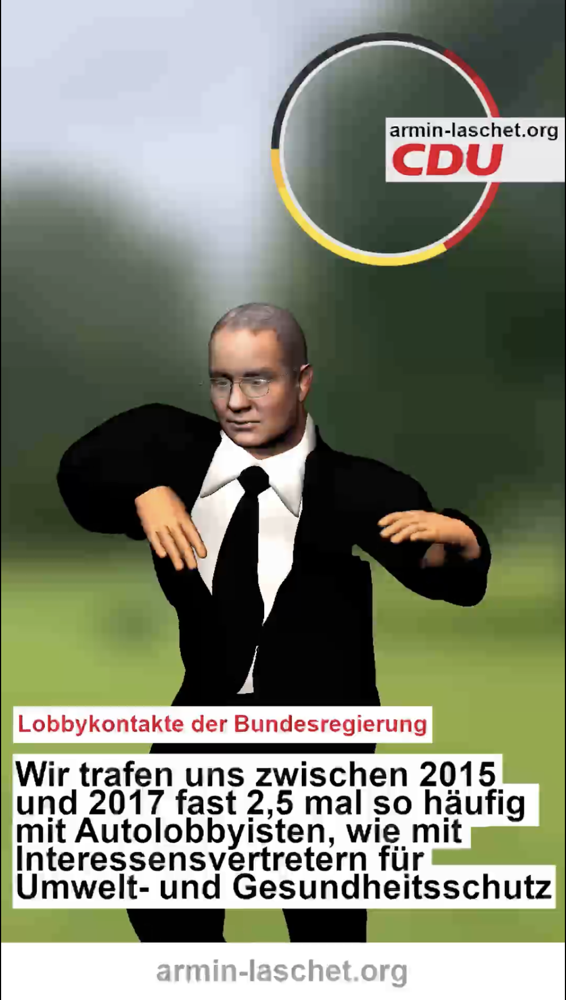
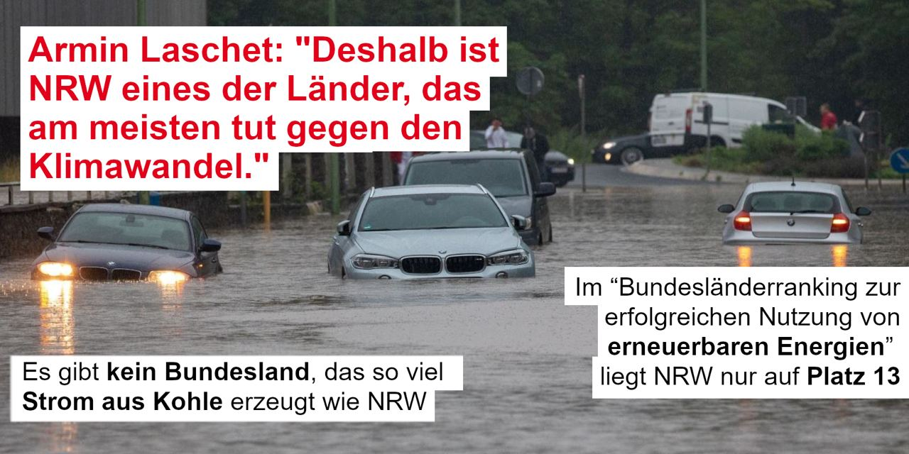

Armin Laschet, Ministerpräsident von Nordrhein-Westfalen und Head of CDU Deutschland.
Während sich die Partei auf den Wahlkampf vorbereitet, kümmern wir uns um die Inhalte.
Bei Armin-Laschet.Org handelt es sich um ein Satire Projekt. Wir gehören keiner Partei an und
sprechen auch keine Wahlempfehlung aus. Mehr Informationen über dieses Projekt
hier.
Immer wieder wird die CDU wegen ihrer problematischen Lobbykontakte kritisiert. Die Liste wäre zu lang, um alle Ereignisse zu thematisieren. Aber einige haben wir vorbereitet:
Landwirtschaftsministerin Klöckner (CDU) traf sich in ihrer Amtszeit mindestens 25 Mal mit Lebensmittelkonzernen wie Nestlé und Mars, aber nur 5 Mal mit Organisationen wie dem Bund ökologische Landwirtschaft. (Stand: 2019)
Der CDU-Wirtschaftsrat ist ein Lobbyverband. Dieser sitzt für Unternehmen wie Daimler, Deutsche Bank und E.on im CDU-Parteivorstand und profitiert von exklusiven Zugängen zur deutschen Regierungspartei. Lobbycontrol schreibt dazu: “Was viele gar nicht wissen und selten berichtet wird: Der Wirtschaftsrat ist – anders als sein Name vermuten lässt – gar kein Parteigremium, sondern ein Lobbyverband. Er ist als unternehmerischer Berufsverband organisiert und hat laut Satzung keinerlei formale Verbindungen zur CDU. Dennoch fungiert er als Scharnier zwischen Partei und Unternehmen: Der Wirtschaftsrat verfügt sogar über einen Sitz im CDU-Bundesvorstand, der sonst nur Parteifunktionär:innen vorbehalten ist. Das ist eine problematische Doppelrolle.”
Die Bundesregierung traf sich zwischen September 2015 und Mai 2017 fast zweieinhalb mal so häufig mit Autolobbyisten, wie mit Interessenvertreter:innen für Umwelt- und Gesundheitsschutz. Diese Info ist weder neu, noch besonders überraschend. Die laschen (lol Laschet) Klimaziele im CDU Parteiprogramm haben damit aber bestimmt nichts zu tun ;)
"Auf der einen Seite ist das Mädchen bewundernswert, aber auf der anderen Seite ist sie krank”. Dieses Zitat stammt aus einem Interview mit Friedrich Merz gegenüber der “Augsburger Allgemeinen”. Merz versucht Kritik an Thunbergs UN-Rede zu üben, zeigt aber die  Handlungsunfähigkeit von hochrangigen CDU Politiker:innen, wenn es um die Bekämpfung des menschengemachten Klimawandels geht.
Das Wahlprogramm der CDU wurde mehrfach diskutiert. Neben sozialen Fragen wurde vor allem die Planlosigkeit bei der Bekämpfung der Klimakrise kritisiert. Die Hauptkritikpunkte von Umweltschützer:innen sind:
Wissenschaftler:innen fordern seit Jahren ein härteres Vorgehen im Kampf gegen die Klimakrise.
Dies sagte Armin Laschet im Hochwasser-Katastrophengebiet Hagen 2021. Das Problem: Studien zeigen, dass NRW im Vergleich mit anderen Bundesländern eher im Mittelfeld liegt. In einigen Punkten fällt die Bilanz noch schlechter aus. Zum Beispiel gibt es kein Bundesland, das so viel Strom aus Kohle erzeugt und auch im “Bundesländerranking zur erfolgreichen Nutzung von erneuerbaren Energien” liegt NRW nur auf Platz 13. (Zur Erinnerung, Deutschland hat 16 Bundesländer).
“Wenn das so wäre, dann hätten mir meine Töchter schon längst die gelbe Karte gezeigt - und meine Frau mich auch vor vierzig Jahren nicht geheiratet”. Mehr dazu hier. Auch beliebt in der Kategorie: Ich hab viele Freundinnen mit Kopftuch, ich kann gar kein Rassist sein.
Es sollte eine wichtige Maßnahme im Kampf gegen Rechtsextremismus sein – doch die CDU/CSU stoppt das Gesetz , das Demokratie-Initiativen finanziell absichern sollte. Die Angst: Es könnte Initiativen Fördern, die “zu Links” seien. Nach dem Anschlag auf zwei Shisha-Bars in Hanau 2020, dem Anschlag auf die Synagoge und den Kebab-Imbiss in Halle 2019, dem Mord am Kasseler Regierungspräsidenten Walter Lübcke, den Anschlägen auf Flüchtlingsunterkünfte 2015 und 2016, dem Anschlag im Münchner Olympiaeinkaufszentrum 2016, der Mordserie des NSU (und wir sind erst am Anfang der Liste rechtsextremer Morde in Deutschland), ist das ein sehr schwaches Argument.
Für diese Äußerung erntete der Bundesinnenminister viel Kritik. Einer der abgeschobenen Afghanen beging Suizid, mindestens fünf sind inzwischen nach Deutschland zurückgekehrt.
Sagte Angela Merkel nach der Abstimmung zum Gesetzentwurf „zur Einführung des Rechts auf Eheschließung für Personen gleichen Geschlechts“ 2017. Auch wenn die Mehrheit des Parlamentes für die Ehe für alle stimmte, war die Mehrheit der Union dagegen. 225 von 309 CDU/CSU Abgeordneten stimmten gegen das Gesetz.